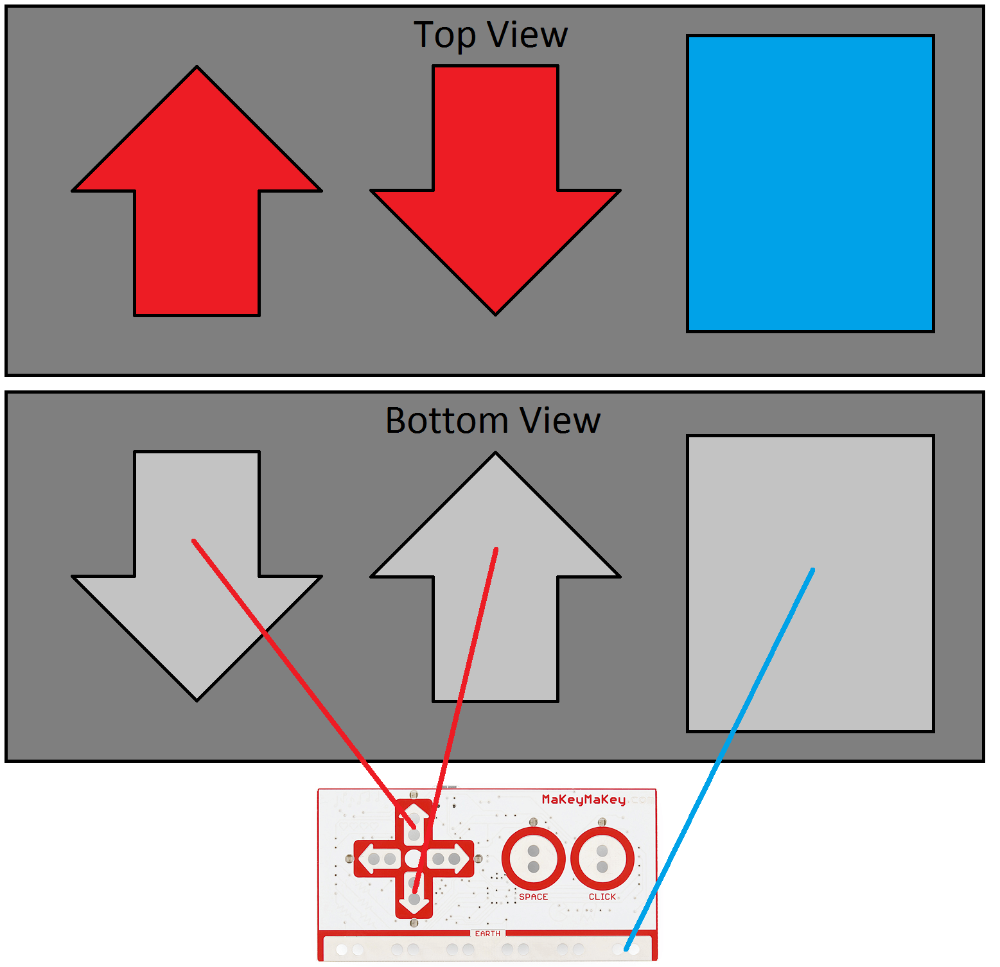
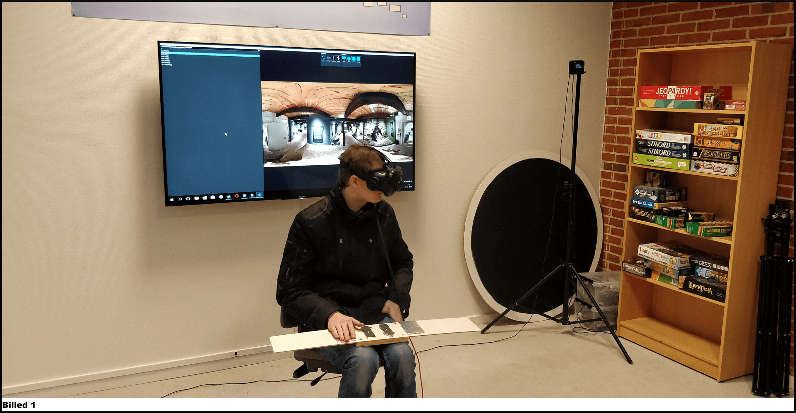
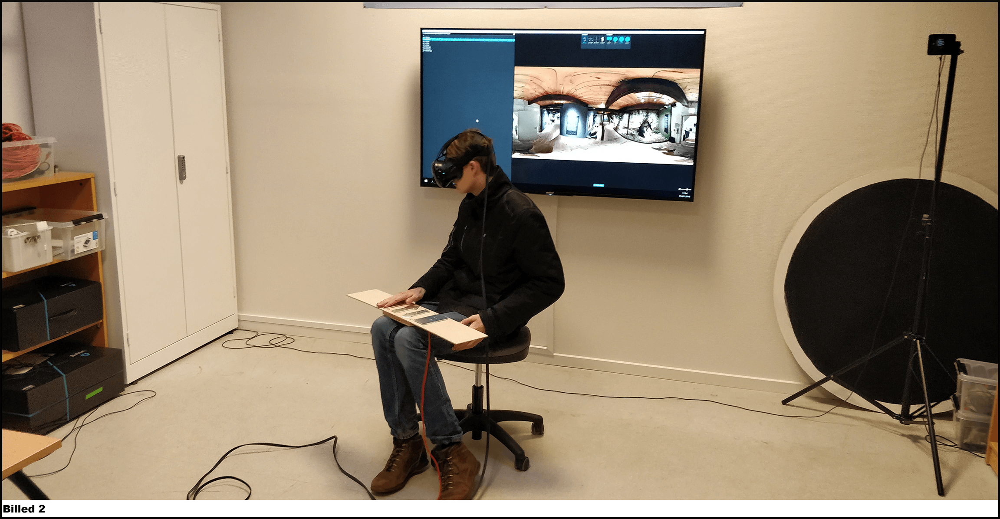

-
Spilprojekt del 3 - [Teknologi - B niveau] / [Kommunikation / IT - A niveau]
Produkt
Form / funktion
Ved brug af HTC - Vive satte vi folk ind i museet, så de kan se hele museet i 360 grader. Det gjorde vi ved at tage ”Photo Spheres” via vores telefoner.
- Photo Sphere er en kugle af billeder hele vejen rundt, forstil dig at du står inde i en kugle, hvor indersiden er sammen satte billeder.Dette kan man gøre ved fremtidige museer, som ikke er handicap venlige. Så kan man tage ”Photop Spheres” af hele museet, som så kan lægges ud på nettet. Så kan folk købe hele VR rundvisningen på nettet, for et lille beløb. Det gør så at folk kan sidde/stå i deres eget hjem, og se hele museet. Det kan være en god ting, fordi så kan man sidde der hjemme og se museer fra hele verden over, i dit eget hjem. Uden at skal bruge dyre domme for at komme ud og rejse. Men det kan også have en dårlig side, det kan være at folk fortrækker at blive hjemme og se det, i stedet for at tage på museum, og kan risikere i mindre besøgende. Makey makey brugte vi til at kunne skifte mellem billederne, da det var en af vores krav til produktet. Det Makey Makey går ud på, er at man kan få helt almindelig ting til at fungere som en knap. Ta’ en banan som eksempel, man putter en ledning i bananen og over i Makey Makey, så kan man røre ved bananen og den fungere nu som en knap. F.eks. at hoppe, eller gå til højre.
Teknisk opbygning
Vi brugte et stykke software som er frit tilgængeligt via Steam VR, som gjorde vi kunne se billederne i 360, igennem HTC - Vive. Softwaret hed ”SteamVR Media Player [Beta]” som gjorde vi kunne se billeder i 360, 180 eller bare et fladt billede. Makey Makey var designet til handicappede, da vi lavede træ pladen ekstra lang, så den kunne ligge i skødet, men ovenpå kørestolen.
Processen
Skitser
Endelige Makey Makey Setup

1. Den firkantet knap er jord, så denne knap skal berøres ellers virker de 2 andre knapper ikke.
2. Denne pil er knappen til at gå billede tilbage.
3. Denne pil er knappen til at gå billede frem.
1. Disse ledninger er jord, som føres ind i Makey Makey boardet.
2. Denne ledning er pil up, knappen til at gå tilbage i billederne. Som også føres ind i Makey Makey boardet.
3. Denne ledning er pil ned, knappen til at gå frem i billederne. Som også føres ind i Makey Makey boardet.
4. Denne ledning er USB kablet, som skal føres ind i computeren, for at få alle knapperne til at læse sammen med computeren.
5. Denne board er hele Makey Makey, den som gør at alle de her knapper snakker sammen med computeren.Endelige test af prototypen, inden fremvisning
Her ser vi Simon Josefsen vores test person, som tester vores Makey Makey, sammen med HTC Vive - VR.
Her ser vi Simon Josefsen igen, som sidder og prøver vores Makey Makey sammen med HTC - Vive.
Evaluering
Vores forventninger
Vi synes vores endelige produkt blev godt. VR fungerede rigtig godt, man fik følelsen af at være på museet. Makey Makey levede ikke op til vores forventninger, da det ikke fungere godt med HTC - Vive. Fordi det var svært at bruge, da man ikke kunne se knapperne.
Tidsplan
Vores tidsplan blev meget fleksibel, da vi havde mandefald. Men vi nåede alt det vi skulle, og vi nåede endda mere end planlagt. Vi brugte vores ekstra tid, til at skaffe flere billeder af museet, som gjorde vores endelige fremvisning meget bedre. Vi lavede en serie af billeder, igennem museet. Så det gav mere mening, i stedet for at have 6 forskellige billeder af museet. Vi fik også de nye billeder i bedre kvalitet, så alt i alt blev vores ekstra tid brugt fornuftigt.
Feedback
Alle der prøvede vores produkt, var meget enige. De synes idéen var rigtig god, en god måde at vise et museum på, hvis man ikke kan komme rundt. De synes alle at Makey Makey delen var svær at bruge, fordi man ikke kunne se hvad man trykkede på. Vi var 100% enig med dem, da vi synes Makey Makey delen ikke passede så godt sammen med vores produkt, det ville have været bedre at bruge HTC - Vive’s Controller, til at bevæge sig rundt i rundvisningen.
Ændringer
Vi fandt hurtigt ud af, at måden vi skulle introducere forsøgspersonen til produktet, ikke fungere så godt i starten. Da vi først hurtigt fortalte hvad det gik ud på, og så gav vi dem HTC - Vive på, så derefter forklarede vi hvordan man skulle bruge vores Makey Makey knapper, til at bevæge sig rundt. Så vi tog hurtig ved lære, og startede med at introducere folk i hvordan de skulle bevæge sig rundt via vores Makey Makey. Men hvis vi skulle lave dette til et rigtigt produkt, og kunne sælge det, så vil vi kassere Makey Makey delen, da det gjorde mere bevægeligt end det skulle.